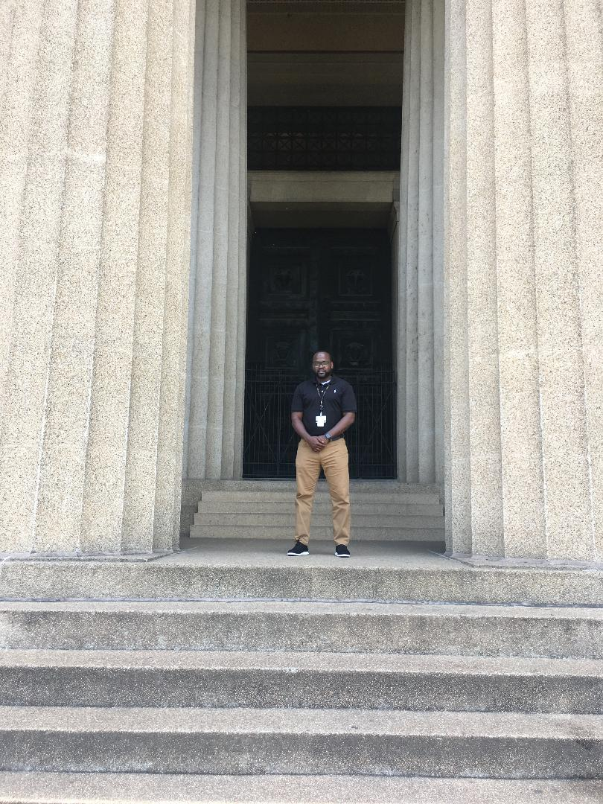

About Me
I am currently attending Vanderbilt University Coding Boot Camp, working to become a Fullstack Web Developer. I want to be a web developer so that I have the abiltiy to turn my thoughts and ideas into meaningful applications that myself and others can use to solve a problem, or make doing a common task more efficient. I am currently a Senior Software Quality Assurance Analyst at Vanderbilt University Medical Center in HealthIT, for the Custom Product Development department. I am currently working on putting together the testing strategy for a custom application that the team is newly designing for the Vanderbilt Transplant Center. The application is currently being written in XCode, which is a programming language used for iOS Mobile application development. If you have ever logged into the Vanderbilt University Medical Center patient portal, My Health at Vanderbilt, then you have seen an application that I have worked on. I started my career in Technology as an IBM AS400 eArchiving Solutions Analyst. From there I went on to become Release Management Coordinator, where we would promote code from the Dev (Development) enviornment to Quality Assurance enviornment, then to User Acceptanct Testing environment, and in some cases the INT and/ or CNV (conversion) environments, and then to Production. After being a Release Management Coordinator, I then transitioned into a Software Quality Assurance Role as a contractor for the state of Tennessee. I have been in Quality Assurance for the past 8 year of my career where I have mastered Agile, Waterfall, and Kanban Software Development Lifecycle methodologies. I have earned a Bachelors of Business Administration in Business Information Systems from Tennessee Sate University in Nashville, TN.
Go Tigers!!!